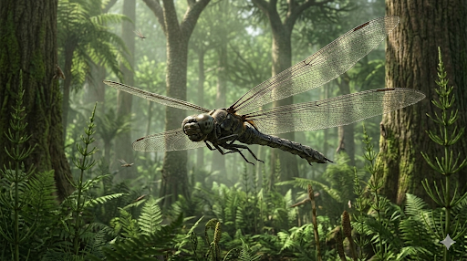

מגאנורה
The Giant Griffinfly: Meganeura monyi

תיק מחקר: נתונים פיזיולוגיים
תקופת פעילות
305 עד 299 מיליון שנה
שלהי תור הקרבון
מסה ומשקל
100 עד 150 גרם
מסה אדירה בעולם החרקים שדרשה כוח עילוי עצום
מוטת כנפיים
65 עד 71 סנטימטרים
רוחב השקול לעיט קטן בן ימינו
מיקום גיאוגרפי
אירופה (צרפת, אנגליה)
שליטת השחקים של יערות הגשם בסופר-יבשת הקדומה פנגיאה.
סיווג טקסונומי קריטי
חרק מסדרת הגריפנפלייס (Meganisoptera)
חשוב להדגיש: היא אינה שפירית אמיתית (Odonata). מדובר בשושלת קדומה ונכחדת שהקדימה את השפיריות המודרניות.
01 // ניתוח אטימולוגי נרחב
| החלק בשם | שפת מקור | פירוש ומשמעות היסטורית |
|---|---|---|
| Mega- | יוונית (μέγας) | גדול / עצום תיאור ישיר לממדיה המפלצתיים, ששברו כל מוסכמה מדעית לגבי גודל של חרקים באותה תקופה. |
| -neura | יוונית (νεῦρον) | עורק / גיד הלחם מלא: **"בעלת העורקים הענקיים"**. מתייחס לרשת העורקים (Venation) הצפופה שרישתה את כנפיה והשתמרה בצורה מושלמת באבן. השם ניתן על ידי שארל ברוניאר (1885). |
| monyi | הוקרה אישית | מר מוני (Mony) הוקרה למנהל הכללי של מכרות הפחם שמנע את השמדת המאובנים על ידי הכורים, ודאג להעביר אותם למדענים. |
02 // תולדות הגילוי: אוצרות המכרות
הגילוי בקומנטרי (1880)
במרכז צרפת, בעיירת הכורים קומנטרי, כורים שחפרו עמוק אל שכבות הפחם נתקלו בהטבעות ענקיות באבן בוץ עדינה (Shale). הממצאים נשלחו לפריז אל שארל ברוניאר, שהדהים את העולם ב-1885 כשהכריז על גילויו של חרק ממעופף בממדים של ציפור טרף.
הדרמה בדרבישייר (1978)
במשך מאה שנה זה נחשב לתופעה צרפתית בלבד. עד שב-1978, במכרה בולסובר באנגליה, התגלתה תגלית מדהימה. המאובן ("שפירית בולסובר") נמצא על ידי כורים בעומק אדיר של **570 מטרים מתחת לקרקע**.
משמעות ממצאי בולסובר
למרות שה"שפירית" הבריטית הייתה קטנה מעט מהצרפתית (מוטת כנפיים של כ-25 ס"מ), חשיבותה הייתה קריטית למדע:
- 1. תפוצה גלובלית: זה הוכיח שהמפלצות המעופפות היו טורפות-העל האוויריות בכל רחבי סופר-יבשת פנגיאה ולא אנומליה מקומית.
- 2. חותם העורקים: הממצא מאנגליה נחשב לאחד השמורים בהיסטוריה. בעוד קרום הכנף התפורר, רשת העורקים מקשיחת הכיטין השאירה חותם תלת-ממדי מושלם בסלע העמוק.
ביומכניקה והאנומליה הפיזיקלית
איך שוברים את מגבלת הגודל?
מבנה הגוף של המגאנורה (71 ס"מ מוטת כנפיים ו-150 גרם משקל) סותר את האווירודינמיקה ומערכת הנשימה של חרקים בני ימינו.
מלכודת הטרכאות
חרקים נושמים דרך צינוריות דקות (טרכאות) בדיפוזיה פסיבית. בעולם מודרני של 21% חמצן, חרק בגודל כזה היה נחנק מיד, כי החמצן פשוט לא היה מצליח לחדור עמוק אל שרירי התעופה העצומים שלו בקצב הנדרש.
הפתרון: שיא החמצן האטמוספרי
המגאנורה פרחה אך ורק בזכות תנאים חריגים: רמות החמצן בקרבון הגיעו לשיא של **30% עד 35%**. האוויר "הסמיך" התגבר על מגבלת הנשימה וסיפק לשרירים דלק תמידי לפעולה.
בנוסף, מציאת המאובן בעומק המכרות באנגליה אימתה את התיאוריה: העובדה שהן נמצאו בדיוק בשכבות גיאולוגיות שיצרו את הפחם (עידן של יערות שוקעי פחמן שיצרו כמויות אדירות של חמצן), הפכה את תיאוריית החמצן לעובדה מוגמרת.
03 // אקולוגיה וגורל השושלת
טורף-העל האווירי
עם עיני תשבץ ענקיות (ראיית 360 מעלות) ולסתות מרסקות, המגאנורה צדה חרקים מעופפים אחרים כמו תיקנים וזבובי ענק. חוקרים מעריכים כי בשל גודלה ויכולת הנשיאה שלה, היא הייתה מסוגלת לחטוף ולטרוף אפילו זוחלים מוקדמים (כמו הילונומוס) או דו-חיים קטנים מבין הענפים.
חנק אבולוציוני
בסוף תור הקרבון, האקלים התייבש ויערות השרכים העצומים שמייצרי החמצן קרסו (אירוע CRC). משאב הזהב של המגאנורה – 35% חמצן – צנח בהדרגה חזרה ל-21%. שרירי הכנפיים שלה פשוט נחנקו באוויר הדליל. במקביל, גם המזון שלה נעלם. השושלת דעכה ופינתה מקום לשפיריות קטנות ויעילות יותר.